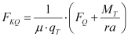
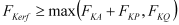

|
|
|


轴向载荷和剪切力作用下的螺栓连接（单螺栓）
在第二种配置中，轴向载荷传递所需的夹紧载荷由剪切力 FQ、扭矩 MT、摩擦系数 μT、平均摩擦半径 ra 和传力结合面的数量 qT 计算得出：
|  | (42.5) |
|  | (42.6) |
| FKQ | 通过摩擦夹紧传递剪切力和/或扭矩所需的夹紧载荷 |
| FKP | 保证密封所需的夹紧载荷（存在内部压力时需要） |
| μT | 界面静摩擦系数（存在剪切力或扭矩时），→（参见图 42.2）。 |
| ra | 由施加扭矩的被夹紧零件的尺寸得出的摩擦半径。 |
Bolted joint under axial load and shearing force (single bolt)
In the second configuration, the required clamp load for axial load transmission is calculated from the shearing force FQ, the torque MT, the coefficient of friction μT, the average friction radius ra and the number of force transmitting parting lines qT:
| (42.5) | |
| (42.6) |
| FKQ | Clamp load required to transmit a shearing force and/or a torque through friction grip |
| FKP | Clamp load required to guarantee sealing (required when internal pressure is present) |
| μT | Interface coefficient of static friction (when shearing force or torques are present), → (see Figure 42.2). |
| ra | The friction radius resulting from the dimensions of the clamped parts to which the torsional moment is applied. |